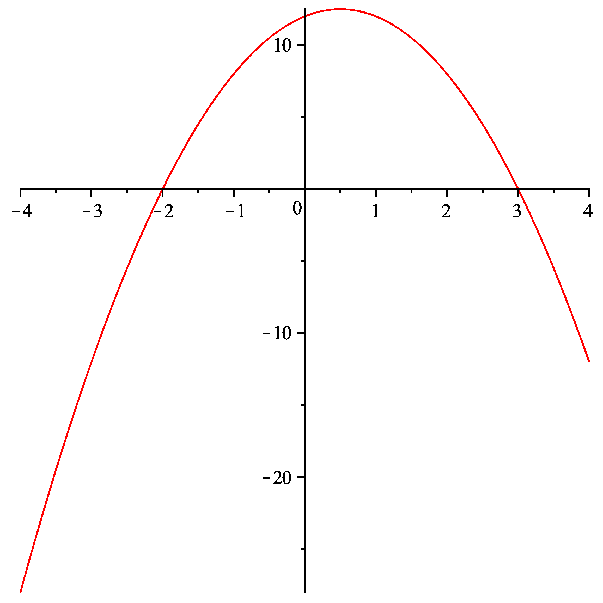

Onlinekurs Mathematik - Elementares Rechnen - Umformen von Termen
1.3.2 Summen- und Produktdarstellung
Mathematische Ausdrücke und Terme kann man auf verschiedene Arten notieren, die jeweils bestimmte Vor- und Nachteile haben. Dabei unterscheidet man im Wesentlichen,
welche mathematischen Operationen zuletzt im Ausdruck ausgeführt werden. Die wichtigsten Typen sind Summen- und Produktdarstellungen.
Info
1.3.14
Bei einer Produktdarstellung ist die Produktoperation die zuletzt ausgeführte Operation. Wegen der Punkt-vor-Strich-Regel erreicht man diese Form nur dadurch,
dass man Klammern um die Faktoren setzt. Aus der Produktdarstellung kann man besonders einfach ablesen, wann der fragliche Term den Wert Null annimmt. Das passiert genau dann, wenn
einer der Faktoren Null wird.
Bei einer Summendarstellung ist Addition bzw. Subtraktion die zuletzt ausgeführte Operation. Wegen der Punkt-vor-Strich-Regel sind Terme ohne Klammern
automatisch in dieser Form. In der Summendarstellung lässt sich das asymptotische Verhalten eines Ausdrucks besonders leicht ablesen, z.B. wird es bei Polynomen nur durch den
Term mit dem höchsten Exponenten festgelegt.
Um zwischen beiden Darstellungen zu wechseln, gibt es mehrere Techniken.
Info
1.3.15
Beim Ausmultiplizieren werden Faktoren multipliziert, indem jeder Summand eines Faktors mit jedem Summanden des anderen Faktors multipliziert und die Ergebnisse summiert werden.
Liegen mehr als zwei Faktoren vor, so sollten diese schrittweise (immer nur zwei miteinander) ausmultipliziert werden.
Beispiel
1.3.16
Die Funktion multipliziert man wie folgt aus:
Aufgabe 1.3.17
Multiplizieren Sie diese Terme vollständig aus und fassen Sie zusammen. Geben Sie das asymptotische Verhalten der Ausdrücke an:
=
. Das asymptotische Verhalten ist
,
.
=
.
=
.
=
.
Aufgabe 1.3.18
Dieser Graph gehört zu einem Polynom zweiten Grades:

Abbildung 1: Graph von .
Der Graph besitzt zwei Nullstellen und , die daraus entstehenden Faktoren ergeben ausmultipliziert das Polynom =
.
Dieses Polynom gehört nicht zum Graph, denn an der Stelle besitzt den Wert
, aber besitzt laut Graph den Wert
.
Diesen Unterschied können wir korrigieren, indem wir setzen mit dem Vorfaktor =
.
Ausmultipliziert ergibt schließlich =
.
Aufgabe 1.3.19
Multiplizieren Sie vollständig aus: =
.

 Kursinhalt
Kursinhalt Einführung
Einführung Mein Kurs
Mein Kurs Einstellungen
Einstellungen Eingangstest
Eingangstest Suche
Suche Das KIT
Das KIT Feedback
Feedback Beta-Version
Beta-Version